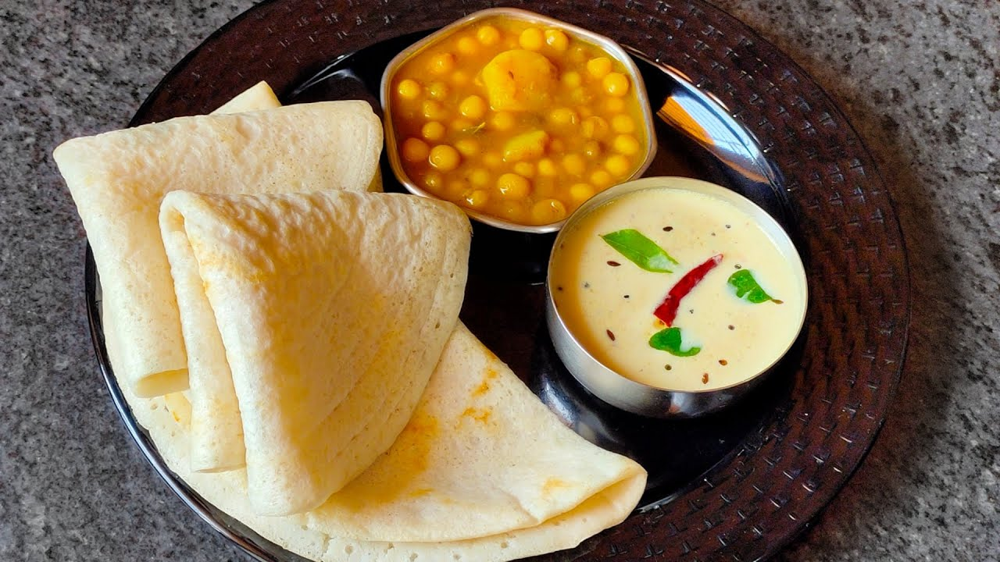

Home
Chakuli Pitha

Description:
These Split Black Gram Lentil And Rice pancakes (Chakuli) are gluten-free and vegan. Light on the stomach they are best enjoyed on festive days with Ghuguni, and Aloo Bhaja as sides.
Ingredients:
- Black Gram Lentil/Urad Dal (With or Without Skin)
- Rice
- Mustard Oil
- Table Salt
Steps:
Grinding the batter:
- Wash and soak the Urad Dal and Rice in the proportion 4:3 or 1:¾ overnight
- Filter out the extra water and grind to make a fine paste
- Slowly add water as required to make a smooth batter
- Keep the batter aside for 4 to 5 hours for fermentation
- Add Salt and Water to the paste for making the batter a little thin; make sure the batter doesn’t get too watery
Making the Chakuli Pitha
- Heat a non-stick pan on a medium flame
- When the pan gets heated, grease well with Mustard Oil
- Take a ladleful of batter and spread it all over the pan in a circular shape
- After a while, check the lower side of the Pitha (Pancake). Once the lower side turns brownish, flip it to the other side
- When the Pitha is cooked well from both sides, take it off the stove; repeat the procedure for all the Pithas (pancakes)
- Serve hot with Aloo Bhaja/Ghuguni/Chutney (Tomato or Coconut) on the side
- Enjoy!